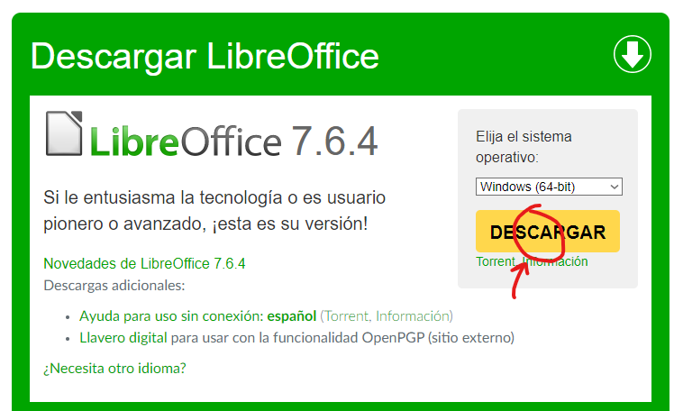
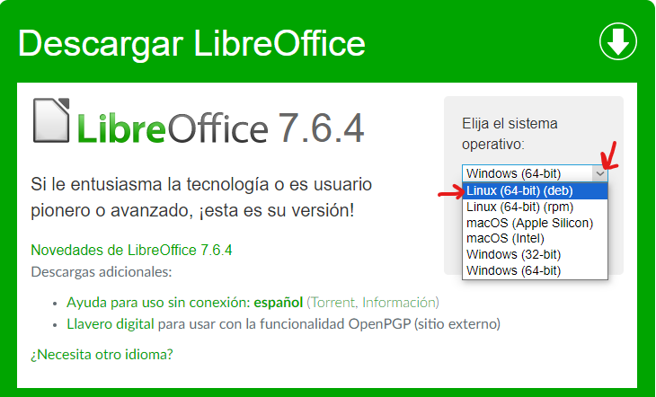

LibreOffice es una poderosa suite de oficina; su interfaz limpia y sus potentes herramientas permiten dar rienda suelta a tu creatividad y hacer crecer tu productividad. LibreOffice incorpora varias aplicaciones que lo convierten en la más potente suite de oficina Libre y de Código Abierto del mercado: Writer, el procesador de textos, Calc, la hoja de cálculos, Impress, el editor de presentaciones, Draw, nuestra aplicación de dibujo y diagramas de flujo, Base, nuestra base de datos e interfaz con otras bases de datos, y Math para la edición de fórmulas matemática. Wikipedia
Para sistemas windows, accederemos a la página oficial de descarga y haremos click aquí:
Accede a la sección de descarga de la página oficial desde aquí.
Una vez descargado, ejecuta el setup.exe, elige la ruta en la que quieras guardarlo y haz click en siguiente hasta finalizar.
Debido a que Ubuntu es una distribución Linux, utiliza un sistema de archivos ext4, el cual es diferente al de Windows, el archivo tendrá una extensión y forma de descargar distinta.
`Al igual que antes, iremos a la página oficial y esta vez haremos click a elegir sistema operativo y Linux Distributions:
Accede a la sección de descarga de la página oficial desde aquí.
Una vez descargado, dale click derecho en la carpeta en la que se encuentre y a "Abrir como".
Acto seguido elige el instalador de software, el sistema te abrirá la tienda de software de Ubuntu y te lo presentará como un programa más, simplemente pulsa instalar y ya lo tendrás.
LibreOffice se puede descargar y utilizar gratuitamente incluso con fines comerciales.
Se trata de un software de código abierto, por lo que cualquiera puede descargar y editar el código fuente del programa.
Por otra parte, puedes comprar una licencia única para Microsoft Office por diferentes precios en función de la versión elegida.
Office Hogar y Estudiantes 2019 tiene un precio oficial de 149,99 euros.
Es posible comprar licencias OEM Microsoft Office por un precio muchísimo más bajo, pero se trata de licencias que no están orientadas a la venta minorista, por lo que no se puede garantizar su correcto funcionamiento a lo largo del tiempo.